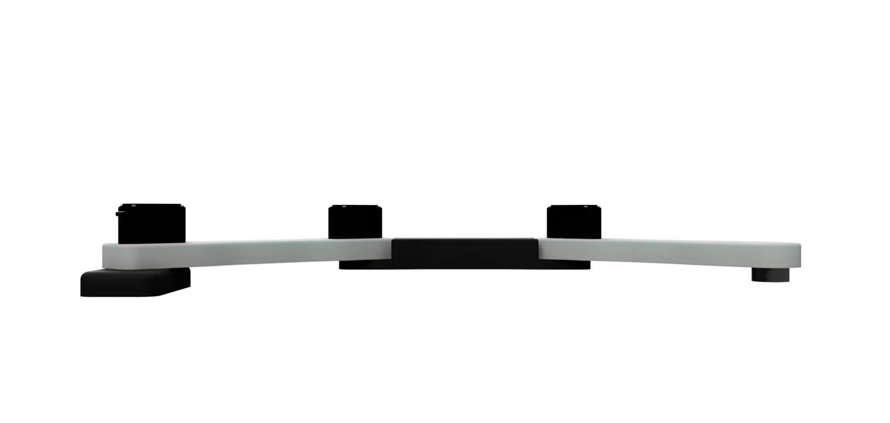
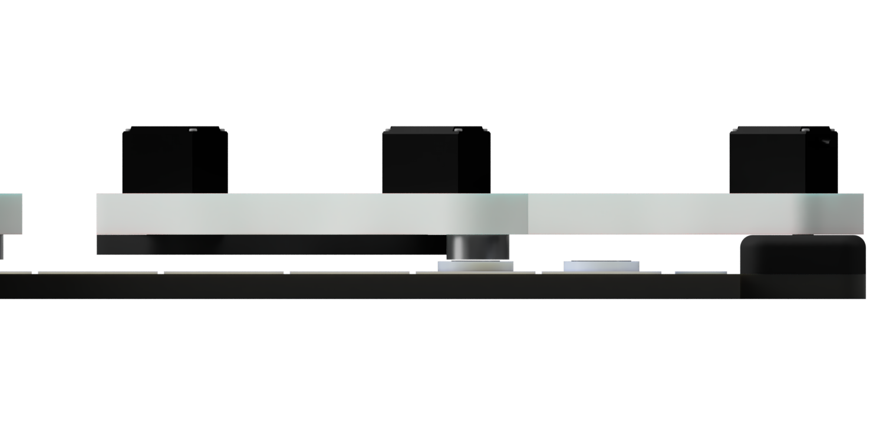
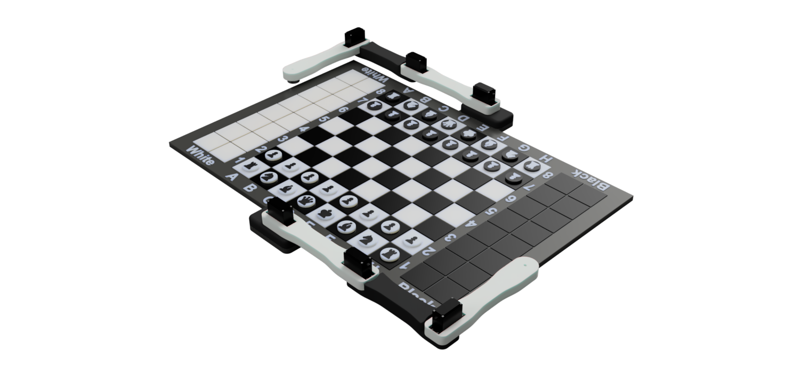
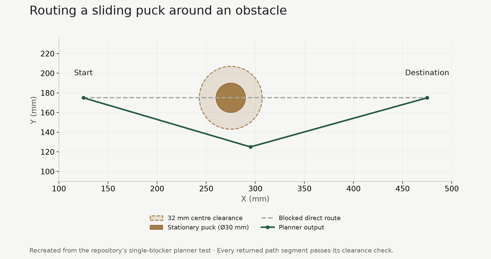
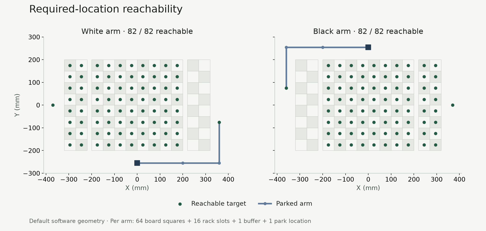
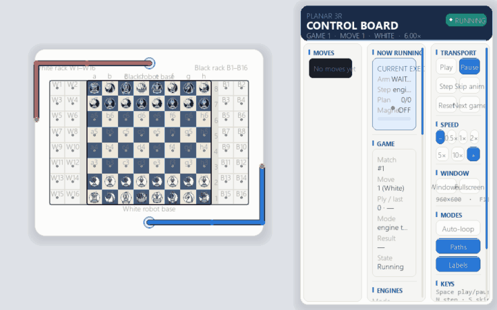

03 / Robotics · Motion planning & embedded control
Planar Robotic Arm
Two three-joint arms for sliding magnetic chess pieces. I did the mechanism, the inverse kinematics, and the collision-aware paths. A PC plans the move. ESP32 boards are meant to run the servos. As of July 2026 the hardware build is in progress. The published checks are software tests, not a finished game on the table.

- Rotary joints per arm
- 3
- Shoulder, elbow and wrist, driven by MG995 servos.
- Configured work surface
- 640 × 400 mm
- The playing board, captured-piece racks and separator lanes.
- Reachable model targets
- 164 / 164
- Required board, rack, buffer and park locations across both arms.
Select a CAD or analysis figure to enlarge it.
01 / Mechanical design
A planar mechanism for sliding pieces
Each arm has three rotary joints with vertical axes. The shoulder, elbow and wrist position the electromagnetic tool in the horizontal plane while keeping its working height fixed. Two identical arm designs are arranged on opposing sides of the board.
The tool stays at one height, so a piece has to slide through a gap. A knight’s legal move still needs a continuous route across the physical surface. The motion planner therefore considers both the rules of chess and the space available for a sliding puck.
The CAD shows the MG995 servo bodies mounted along the links, the supported base joint and the magnetic tool underneath the final link. The side view exposes the relationship between link height, joint placement and the tool’s contact level.





02 / Working geometry
The board is part of the mechanism
The software uses a table-centred coordinate system, with X across the board and Y toward the black side. The playing area is 400 × 400 mm, divided into 50 mm squares. Two-column captured-piece racks sit on either side, separated from the board by 20 mm lanes.
The arm bases are placed 55 mm beyond the long edges. The two base coordinate frames face in opposite directions, allowing the same kinematic model to serve both arms. Their rest configurations follow the outside of the table: two links lie along a long edge and the last link turns around the corner.
The rack positions, buffers and parking poses are explicit destinations in the model. A capture therefore has a defined destination, and the planner can update physical piece locations after every transfer.

| Feature | Value | Role |
|---|---|---|
| Arm links | 200 / 160 / 180 mm | Joint-axis spacing, with the last length measured to the magnetic tool centre. |
| Maximum straight-line reach | 540 mm | Sum of the three link lengths. |
| Board and table | 400 × 400 mm / 640 × 400 mm | Eight-by-eight playing area within the complete work surface. |
| Cell and lane spacing | 50 mm cells / 20 mm separators | Positions the pieces and captured-piece racks. |
| Base centres | (0, −255) and (0, +255) mm | Mirrored placement, 55 mm beyond the table edges. |
| Planning puck model | 30 mm diameter + 2 mm clearance | Requires 32 mm between the moving puck centre and another puck centre. |
03 / Chess and physical inventory
Turning a move into a sequence
The game layer keeps two connected descriptions of the system: the legal chess position and an inventory of 32 physical tokens. Each token has an identity and a location, whether it is on a board square, in a captured-piece rack or at a temporary buffer.
A move is first checked against the legal moves in the current position. The planner then creates an ordered list of physical transfers. It updates a copy of the inventory while planning so that each subsequent transfer sees the space created by the previous one.
The board and inventory are committed after the transfer sequence and the expected-occupancy check. This keeps the game state tied to the physical operations that the control system has completed.
| Move | Transfer sequence |
|---|---|
| Ordinary move | Move the selected token from its source square to its destination. |
| Capture | First transfer the captured token into the active arm’s next available rack slot; then move the attacking token. |
| Castling | Move the king, then transfer the rook to its castled square. |
| En passant | Remove the captured pawn from its actual square before transferring the attacking pawn. |
| Promotion | Keep the same physical pawn token and update its logical chess type. |
| Reset | Restore tokens to their original homes, using available racks and buffers to resolve occupied destinations. |


04 / Planar path planning
Finding room for the piece to move
The path planner starts with the current physical inventory. Every stationary token becomes a circular obstacle; the moving token is excluded from that obstacle list. The first check is whether the source and destination can be connected by a clear straight segment.
When that route is blocked, the planner builds a graph of candidate waypoints. These include clear cell centres, cell corners, separator-lane points, buffers and an exterior rim 40 mm beyond the table boundary. Graph connections are accepted when the complete segment meets the puck-clearance condition, and the search selects a route by accumulated travel distance.
A detour remains one continuous magnetic carry. Intermediate waypoints guide the piece around obstacles. If the preferred chess move has no feasible sliding corridor, the game loop records that blocked move and tries another legal move.


05 / Inverse kinematics
Converting XY targets into joint angles
The arm has three joints available for a two-dimensional positioning task. The solver uses that freedom by sampling the absolute orientation of the final link in four-degree increments. For each candidate orientation, it subtracts the final link from the target position and solves the remaining two-link problem.
Both elbow solutions are considered. The solver then recovers the wrist angle, finds equivalent angles within the servo travel windows, and rejects candidates that violate the configured joint-limit or singularity margins. With a previous pose available, it favours a nearby joint configuration to reduce changes between waypoints.
The required-location check covers each board square, the arm’s rack slots, its buffer and its park pose. The default geometry reaches all 82 required locations for each arm, giving 164 across the complete system.


| Joint | Command window | Selection rule |
|---|---|---|
| Shoulder | −90° to +90° | Base rotation in the local arm coordinate frame. |
| Elbow | 0° to 180° | Bends the first two links toward the target. |
| Wrist | 0° to 180° | Completes the final-link orientation and tool position. |
| Operational margins | 5° joint-limit and singularity margins | Applied when selecting ordinary inverse-kinematics solutions. |
06 / Distributed control
Planning on the PC, motion at the arm
The PC owns the chess state, token inventory, path planning, inverse kinematics, camera checks and recovery policy. It sends newline-delimited JSON over USB to an ESP32 gateway, which routes commands over ESP-NOW to the controller on the selected arm.
Each arm controller drives three MG995 servos and its electromagnet. The firmware converts logical joint angles into calibrated servo pulse widths and slews toward the requested waypoints. Per-joint calibration defines the pulse centre, direction and angle scale.
Commands carry identifiers, and completion comes from the arm controller’s DONE or FAULT response. A radio acknowledgement confirms packet delivery; the command sequence advances on the arm’s execution response.
PC · Python
Chess rules, inventory, paths, inverse kinematics and vision
USB · JSON commands
ESP32 gateway
Routes commands and execution responses over ESP-NOW
ESP-NOW
ESP32 controller
3 MG995 servos · Electromagnet
Pickup input · Motion state
ESP32 controller
3 MG995 servos · Electromagnet
Pickup input · Motion state
- Park the opposite armReserve the shared workspace for one arm.
- Move to the sourceConvert the pickup location into a joint pose.
- Engage the magnetHold at the source for the configured 0.5-second settle.
- Follow the planned carrySend joint waypoints in packets of up to three poses.
- Release and returnSwitch the magnet off, wait 0.5 seconds and park the arm.
- Verify and commitCheck expected occupancy before advancing the game state.
| Feature | Implementation |
|---|---|
| Packet size | Commands fit within the 240-byte protocol budget; trajectories are split into groups of three waypoints. |
| Startup | Servo outputs remain detached and the servo power-enable output stays low until HOME. |
| Motion watchdog | A 20-second firmware watchdog faults an operation that exceeds its state timeout. |
| Fault handling | STOP, emergency-stop and fault paths turn off the magnet and disable the servo rail. |
| Command tracking | Responses are matched to command IDs; timeouts can be retried, while permanent faults stop execution. |
07 / Feedback and recovery
Checking the physical board state
The camera pipeline maps an overhead image into the board’s coordinate frame using a homography. Calibration can cover either the eight-by-eight board or the complete table, including captured-piece racks.
An empty-surface reference provides the baseline for occupancy detection. The vision layer identifies occupied locations; the physical inventory supplies token identity. Comparing the observed and expected occupied cells exposes missing or unexpected pieces after a transfer.
A mismatch latches the game into a fault state. Commands and responses are journalled so the last completed operation can be inspected. Recovery restores the table to the expected board and inventory, checks occupancy again, and clears the fault before play continues.
08 / Digital twin
Watching the complete sequence
The digital twin uses the same move decomposition and piece-path planner as the game loop. It displays both arms, the board, captured-piece racks and transfer paths, so I can watch a chess move turn into joint motion.
The interface supports play and pause, single-step inspection, reset, speed changes and path overlays. The default demo uses seeded random legal moves; Stockfish can also supply moves through the same planning layer. Planning runs in the background so the display can continue updating while the next move is prepared.


09 / Software results
Testing the complete control pipeline
The repository’s automated checks cover chess move decomposition, piece inventory, geometric reachability, path clearance, communication, fault handling, vision and the visual simulator. The mock transport exercises the command sequence with simulated arm responses.
The published CI run for the featured version passed on Python 3.11 and 3.12. Each job reported 66 passing tests, one skipped GIF-export test, a successful 164-location reachability check and a completed headless mock simulation. These are software verification results.
| Check | Python 3.11 | Python 3.12 |
|---|---|---|
| Unit tests | 66 passed · 1 skipped | 66 passed · 1 skipped |
| Required-location reachability | 164 / 164 reachable | 164 / 164 reachable |
| Headless mock simulation | Passed | Passed |
| Static code checks | Passed | Passed |
The skipped test covers GIF export and requires Pillow. View the recorded CI run ↗
| Area | Behaviour checked |
|---|---|
| Chess rules and inventory | Illegal-move rejection, both castling directions, en passant, promotion with the same physical pawn and reset planning. |
| Puck clearance | A direct path through a puck is rejected; the planner finds a detour; different clearance settings change whether a narrow gap is usable. |
| Workspace sequencing | The opposite arm is parked before a transfer, and magnet operations follow the expected order. |
| Protocol and recovery | Packet-size limits, response matching, timeout handling, permanent faults and camera mismatches. |
| Vision | Synthetic occupied squares and rack locations, expected-occupancy mismatches and calibration data. |
| Digital twin | Move progression, reset, pause/step behaviour, fixed-height animation and responsive background planning. |
Engineering outcome
One task, connected from mechanics to software
The fixed-height mechanism makes route planning part of every move. The project brings together the arm geometry, the physical piece inventory, the magnetic transfer sequence and the software checks needed to keep those systems aligned.
The CAD, simulator, planner, firmware and automated tests form a complete development record for the Planar Robotic Arm and its chess application.